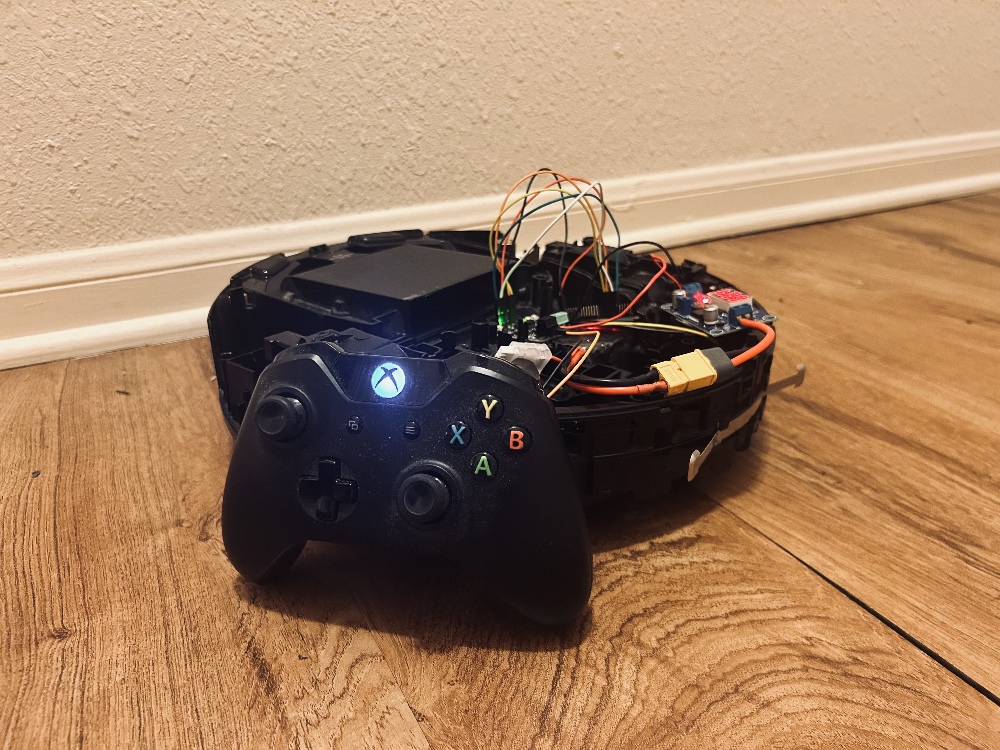
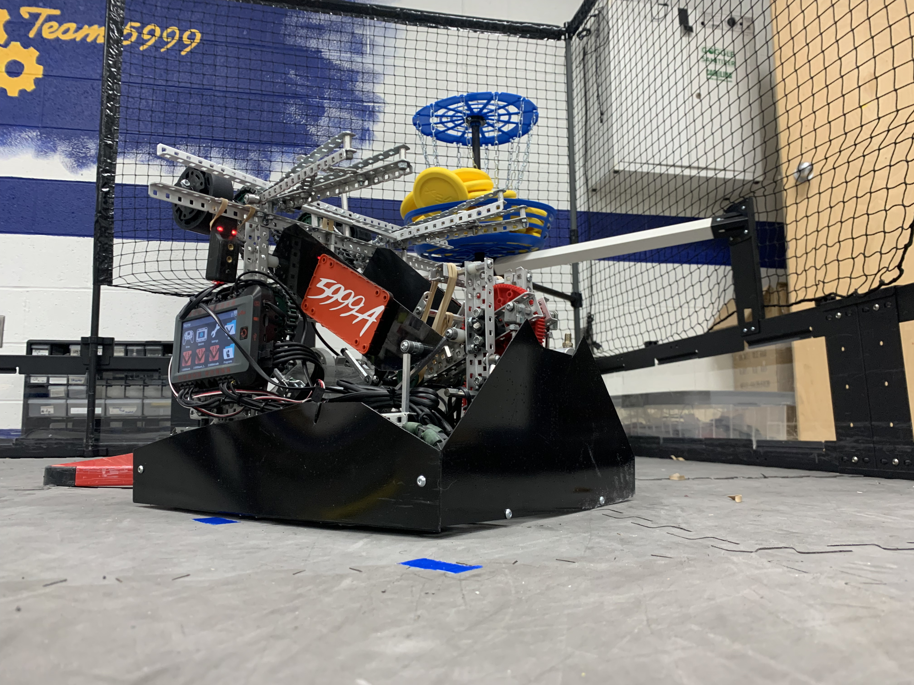
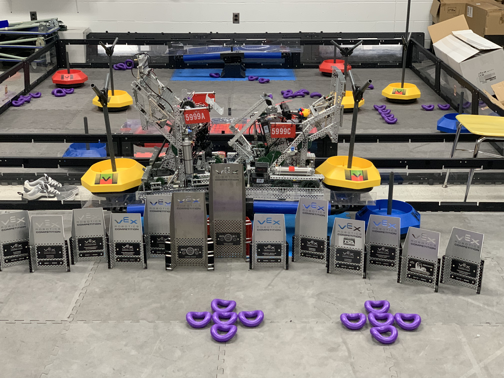
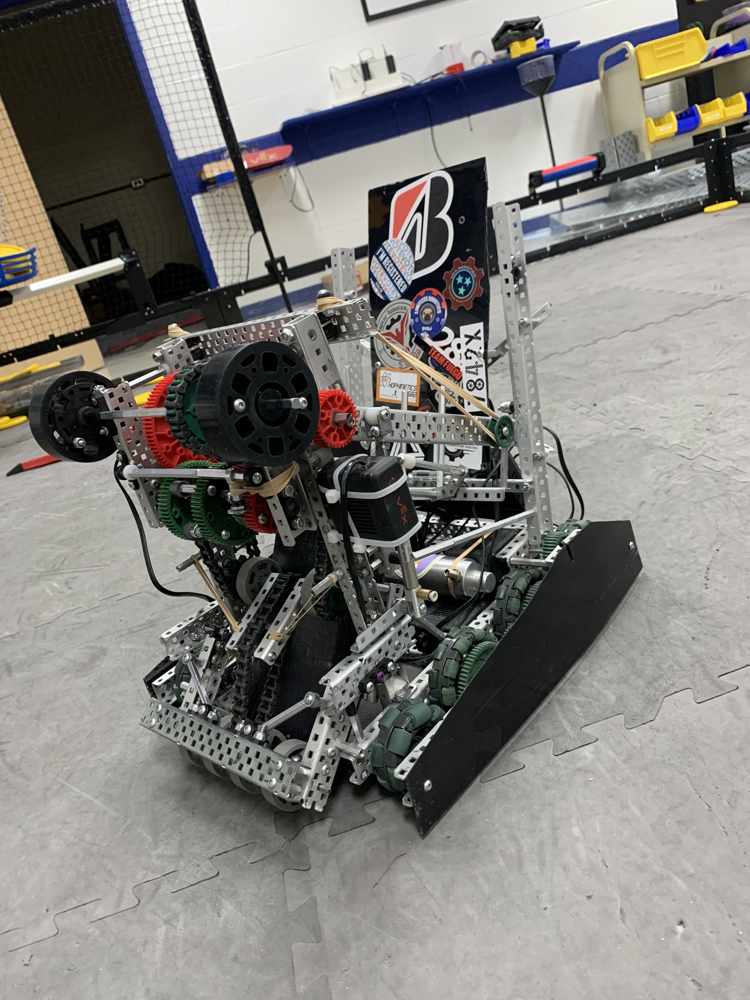

Robotics & Controls




This robot is based on a Shark RV1001AE robot vacuum, which provides an excellent platform for a wireless mobile robot.
I gained experience in Fusion 360 by modelling several robots each year, and by building robots to complete various tasks, I constructed mechanical systems such as 4-bar linkages, differentials, ratchets, and flywheels. I also developed autonomous routines through wheel odometry and PID control, done in C++. This allowed for precise point-to-point movements with high repeatability. These autonomus functions also involved integrating several sensors, such as IMUs, encoders, potentiometers, and ultrasonic sensors.